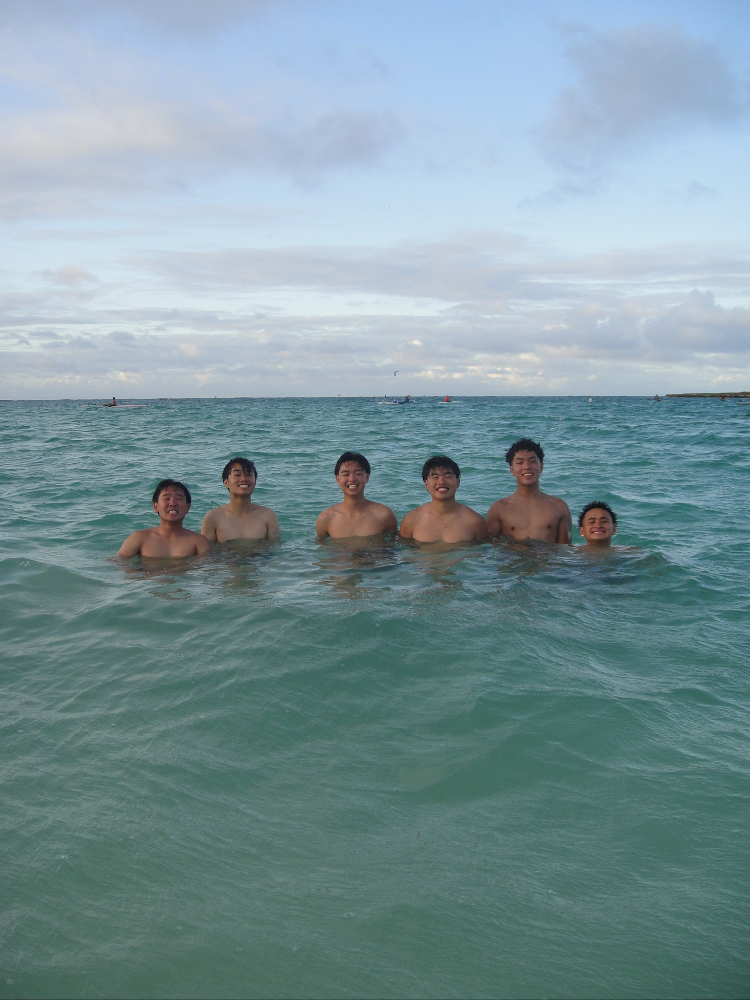

Hello all, My name is Cody Tran and I am not an experienced traveler. The only place that I've traveled to have been Vietnam which is my home country. That was until me and my friends planned our senior trip to go to hawaii. I have never been to anything like Hawaii and was ecstatic to go. My expectations were surpassed and Hawaii easily became one of my favorite vacation spots. The experiences in Hawaii have motivated me to even travel to other places and check out the beauty of other countries/cultures. I definitely want to revisit in the future and am creating this guide to help others as well.
Project Summary: My final project is a Hawaii (specifically Oahu) travel guide. I am using my experience as an inexperienced traveler visiting Hawaii for the first time for my senior trip. I’ve provided detailed information on experiences and food that customers should try. I also implemented a user form where users can submit their own reviews on different islands that they have visited. The other feature that I utilized was transformations on the destinations page. My overall purpose is to help influence people to visit Oahu.